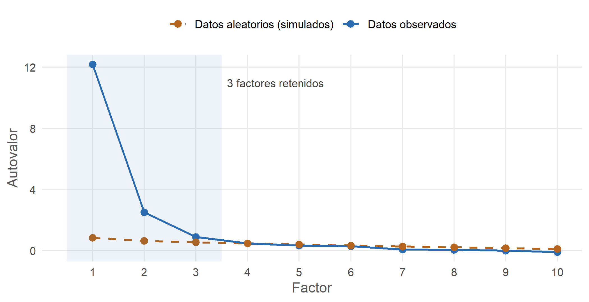
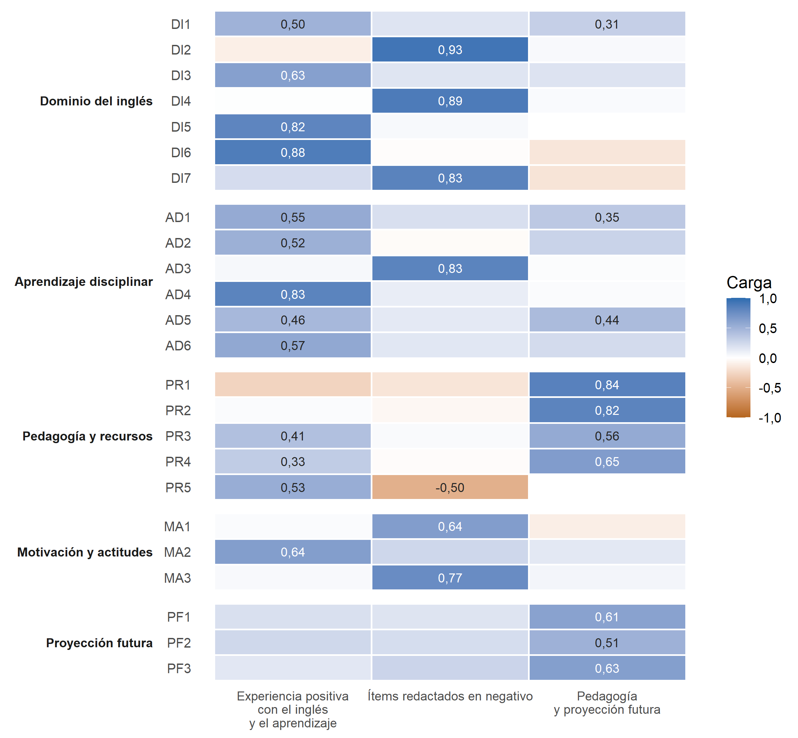

Capítulo 5 Evidencias de validez del instrumento
En las secciones anteriores se mostró que los cinco ítems del índice de éxito percibido forman un solo factor (sección 4.5). Esta sección va más allá y examina la estructura del cuestionario completo: si sus ítems Likert se organizan en las cinco dimensiones previstas (Dominio del inglés, Aprendizaje disciplinar, Pedagogía y recursos, Motivación y actitudes, y Proyección futura). Se siguió un procedimiento de validación cruzada: un análisis factorial exploratorio (AFE) en una mitad de la muestra y un análisis factorial confirmatorio (AFC) en la otra. El código está en R/validacion_instrumento.R.
Resumen. Los datos son adecuados para el análisis factorial, pero la estructura de cinco dimensiones no se confirma. El AFE identifica 3 factores y ningún modelo alcanza un ajuste aceptable en el AFC. Los problemas principales son tres: las dimensiones Dominio del inglés y Aprendizaje disciplinar no se distinguen entre sí (correlación latente de 0,95), los ítems redactados en negativo forman un factor propio y algunos ítems funcionan mal. Estos resultados no afectan al índice de éxito percibido, cuya unidimensionalidad se confirmó en la sección 4.5, pero sí deben reportarse como limitación del instrumento.
5.1 Procedimiento
Ítems analizados. Se usaron 24 de los 25 ítems Likert. Se excluyó la segunda aparición del ítem repetido “Me resultó fácil expresar mis ideas y opiniones en inglés”. Los 6 ítems redactados en sentido negativo se invirtieron (6 − respuesta), de modo que en todos los ítems un valor alto indica una experiencia más favorable.
| Código | Dimensión | Ítem | Categorías |
|---|---|---|---|
| DI1 | Dominio del inglés | En general, comprendí las explicaciones en inglés dadas por los profesores. | 3 |
| DI2 | Dominio del inglés | Leer textos académicos en inglés fue un reto que dificultó mi comprensión de las temáticas del curso. (invertido) | 5 |
| DI3 | Dominio del inglés | Los textos y materiales en inglés fueron comprensibles en la mayoría de los cursos. | 4 |
| DI4 | Dominio del inglés | Sentía que no era capaz de aprender bien debido a mis limitaciones en inglés. (invertido) | 5 |
| DI5 | Dominio del inglés | Me resultó fácil expresar mis ideas y opiniones en inglés durante las clases. | 4 |
| DI6 | Dominio del inglés | Mi nivel de participación en las clases dictadas en inglés es el mismo que cuando las clases son en español. | 5 |
| DI7 | Dominio del inglés | Tuve dificultades para participar oralmente debido a mi nivel de idioma. (invertido) | 5 |
| AD1 | Aprendizaje disciplinar | Pude entender los conceptos clave de las asignaturas impartidas en inglés. | 3 |
| AD2 | Aprendizaje disciplinar | Mi conocimiento previo de la materia me ayudó a comprender las temáticas del curso impartido en inglés. | 3 |
| AD3 | Aprendizaje disciplinar | El inglés fue una barrera para demostrar mi conocimiento sobre los temas de la clase. (invertido) | 5 |
| AD4 | Aprendizaje disciplinar | Mi nivel de inglés me ayudó a tener un buen desempeño académico en las asignaturas. | 4 |
| AD5 | Aprendizaje disciplinar | Logré un buen desempeño académico en las asignaturas, a pesar de fueron dictadas en inglés. | 3 |
| AD6 | Aprendizaje disciplinar | En mis cursos del programa en inglés, aprendí igual que en los cursos impartidos en español. | 5 |
| PR1 | Pedagogía y recursos | Los docentes tienen un nivel suficiente de inglés para dictar la clase en ese idioma. | 4 |
| PR2 | Pedagogía y recursos | Los materiales que usaron los profesores en las clases fueron adecuados para enseñar las temáticas del curso. | 4 |
| PR3 | Pedagogía y recursos | Las evaluaciones me permitieron demostrar mis conocimientos independientemente de mi nivel de inglés. | 4 |
| PR4 | Pedagogía y recursos | Las actividades usadas por el profesor en las clases dictadas en inglés facilitaron el aprendizaje de las temáticas del curso. | 3 |
| PR5 | Pedagogía y recursos | Utilicé los recursos de apoyo (centro de apoyo a los estudiantes, centros de escritura) que ofrece la universidad para comprender mejor las temáticas de los cursos. | 5 |
| MA1 | Motivación y actitudes | Tuve la necesidad de prepararme más para los cursos dictados en inglés que para los que son en mi lengua. (invertido) | 5 |
| MA2 | Motivación y actitudes | Me sentí cómodo/a porque entendí las temáticas de las clases en inglés. | 4 |
| MA3 | Motivación y actitudes | Tomar asignaturas de mi programa en inglés me generó cansancio mental. (invertido) | 5 |
| PF1 | Proyección futura | Creo que los cursos dictados en inglés me van a preparar para mi futuro. | 3 |
| PF2 | Proyección futura | Estaría dispuesto/a a seguir tomando cursos del programa dictados en inglés. | 4 |
| PF3 | Proyección futura | Recomendaría a otros estudiantes tomar cursos del programa dictados en inglés. | 4 |
Categorías escasas. Muchos ítems tienen muy pocas respuestas en las categorías de desacuerdo. Como los análisis tratan los ítems como ordinales, las categorías con muy pocos casos producen estimaciones inestables. En cada ítem se unieron las categorías más bajas hasta que la inferior reuniera al menos 10 respuestas, sin dejar nunca menos de tres categorías (última columna de la tabla).
División de la muestra. Los 348 estudiantes se dividieron al azar en dos submuestras de igual tamaño, estratificadas por programa: la submuestra A (n = 174) para el AFE y la submuestra B (n = 174) para el AFC. Las dos submuestras son equivalentes en las variables principales del estudio:
| Variable | Submuestra A | Submuestra B | p |
|---|---|---|---|
| Programa: Administración | 50,0 % | 50,0 % | 1,000 |
| Programa: Negocios Int. | 37,9 % | 37,9 % | 1,000 |
| Programa: Contaduría | 12,1 % | 12,1 % | 1,000 |
| Colegio bilingüe | 50,0 % | 51,1 % | 0,915 |
| Colegio público | 18,4 % | 20,1 % | 0,786 |
| Estrato (media) | 3,97 | 3,78 | 0,178 |
| Índice de éxito (media) | 4,32 | 4,23 | 0,297 |
Pruebas χ² para las variables categóricas y Mann-Whitney para estrato e índice. Ninguna diferencia es significativa.
5.2 Análisis factorial exploratorio (submuestra A)
5.2.1 Adecuación de los datos
| Indicador | Valor | Criterio | Interpretación |
|---|---|---|---|
| KMO (correlaciones de Pearson, submuestra A) | 0,904 | ≥ 0,80 muy bueno | Adecuación muy buena: las correlaciones entre ítems se explican bien por factores comunes. |
| KMO (correlaciones policóricas, muestra total) | 0,910 | ≥ 0,80 muy bueno | Confirma la adecuación con correlaciones que tratan los ítems como ordinales. |
| Prueba de esfericidad de Bartlett | χ²(276) = 5.012,4, p < 0,001 | p < 0,05 | La matriz de correlaciones difiere de una matriz identidad: hay correlaciones suficientes para factorizar. |
| Determinante de la matriz policórica (submuestra A) | 5.5e-14 | Mayor que 0 | Muy cercano a 0: algunos ítems están muy correlacionados entre sí (posible redundancia). |
Con n = 174 y 24 ítems ordinales, la matriz policórica de la submuestra A es casi singular (su autovalor más pequeño es 0.0043), lo que hace inestable el KMO calculado sobre ella. Por eso la adecuación se valoró con las correlaciones de Pearson de la submuestra A y con la matriz policórica de la muestra completa, que coinciden en un KMO de 0,90 a 0,91 (Kaiser, 1974). Los datos son adecuados para el análisis factorial.
5.2.2 Número de factores

Figura 5.1: Análisis paralelo (submuestra A). Se retienen los factores cuyo autovalor observado supera al de datos aleatorios del mismo tamaño (percentil 95 de 100 simulaciones).
El análisis paralelo (Horn, 1965) indica 3 factores: los autovalores observados de los primeros 3 factores (12,19, 2,50, 0,89) superan a los de datos aleatorios, y a partir del cuarto ya no. No aparecen las cinco dimensiones previstas.
5.2.3 Estructura factorial
Se extrajeron 3 factores por mínimos residuales sobre correlaciones policóricas, con rotación oblicua (oblimin), porque es razonable esperar que los factores se relacionen entre sí.

Figura 5.2: Matriz de cargas factoriales del AFE (submuestra A, rotación oblimin). Se muestran las cargas de 0,30 o más en valor absoluto. Los ítems están agrupados por su dimensión teórica.
| Código | Dimensión teórica | Factor del AFE | Carga principal | Segunda carga | h² | Decisión |
|---|---|---|---|---|---|---|
| DI6 | Dominio del inglés | Experiencia positiva con el inglés y el aprendizaje | 0,88 | 0,16 | 0,64 | Retenido |
| AD4 | Aprendizaje disciplinar | Experiencia positiva con el inglés y el aprendizaje | 0,83 | 0,12 | 0,83 | Retenido |
| DI5 | Dominio del inglés | Experiencia positiva con el inglés y el aprendizaje | 0,82 | 0,04 | 0,71 | Retenido |
| MA2 | Motivación y actitudes | Experiencia positiva con el inglés y el aprendizaje | 0,64 | 0,25 | 0,81 | Retenido |
| DI3 | Dominio del inglés | Experiencia positiva con el inglés y el aprendizaje | 0,63 | 0,18 | 0,71 | Retenido |
| AD6 | Aprendizaje disciplinar | Experiencia positiva con el inglés y el aprendizaje | 0,57 | 0,23 | 0,66 | Retenido |
| AD1 | Aprendizaje disciplinar | Experiencia positiva con el inglés y el aprendizaje | 0,55 | 0,35 | 0,83 | Retenido |
| PR5 | Pedagogía y recursos | Experiencia positiva con el inglés y el aprendizaje | 0,53 | 0,50 | 0,21 | Problemático (carga cruzada) |
| AD2 | Aprendizaje disciplinar | Experiencia positiva con el inglés y el aprendizaje | 0,52 | 0,28 | 0,47 | Retenido |
| DI1 | Dominio del inglés | Experiencia positiva con el inglés y el aprendizaje | 0,50 | 0,31 | 0,65 | Problemático (carga cruzada) |
| AD5 | Aprendizaje disciplinar | Experiencia positiva con el inglés y el aprendizaje | 0,46 | 0,44 | 0,73 | Problemático (carga cruzada) |
| DI2 | Dominio del inglés | Ítems redactados en negativo | 0,93 | 0,10 | 0,78 | Retenido |
| DI4 | Dominio del inglés | Ítems redactados en negativo | 0,89 | 0,03 | 0,81 | Retenido |
| DI7 | Dominio del inglés | Ítems redactados en negativo | 0,83 | 0,22 | 0,88 | Retenido |
| AD3 | Aprendizaje disciplinar | Ítems redactados en negativo | 0,83 | 0,04 | 0,74 | Retenido |
| MA3 | Motivación y actitudes | Ítems redactados en negativo | 0,77 | 0,06 | 0,65 | Retenido |
| MA1 | Motivación y actitudes | Ítems redactados en negativo | 0,64 | 0,10 | 0,41 | Retenido |
| PR1 | Pedagogía y recursos | Pedagogía y proyección futura | 0,84 | 0,27 | 0,57 | Retenido |
| PR2 | Pedagogía y recursos | Pedagogía y proyección futura | 0,82 | 0,05 | 0,68 | Retenido |
| PR4 | Pedagogía y recursos | Pedagogía y proyección futura | 0,65 | 0,33 | 0,73 | Retenido |
| PF3 | Proyección futura | Pedagogía y proyección futura | 0,63 | 0,27 | 0,73 | Retenido |
| PF1 | Proyección futura | Pedagogía y proyección futura | 0,61 | 0,20 | 0,65 | Retenido |
| PR3 | Pedagogía y recursos | Pedagogía y proyección futura | 0,56 | 0,41 | 0,72 | Problemático (carga cruzada) |
| PF2 | Proyección futura | Pedagogía y proyección futura | 0,51 | 0,25 | 0,61 | Retenido |
Criterio de retención: carga principal ≥ 0,40 y al menos 0,20 mayor que la segunda carga. h² = comunalidad (proporción de la varianza del ítem explicada por los factores). Los 3 factores explican el 68 % de la varianza.
| Experiencia positiva con el inglés y el aprendizaje | Ítems redactados en negativo | Pedagogía y proyección futura | |
|---|---|---|---|
| Experiencia positiva con el inglés y el aprendizaje | 1,00 | ||
| Ítems redactados en negativo | 0,60 | 1,00 | |
| Pedagogía y proyección futura | 0,49 | 0,26 | 1,00 |
Interpretación del AFE. La estructura empírica no sigue las dimensiones del cuestionario:
- Experiencia positiva con el inglés y el aprendizaje. Reúne los ítems positivos de Dominio del inglés y de Aprendizaje disciplinar, junto con “me sentí cómodo/a” (Motivación). Para los estudiantes, comprender y expresarse en inglés y aprender la materia forman una sola experiencia.
- Ítems redactados en negativo. Agrupa los 6 ítems negativos, que provienen de tres dimensiones distintas (leer fue un reto, no era capaz, dificultades orales, barrera, prepararme más y cansancio). Su único rasgo común es la redacción, lo que sugiere un efecto de método: los estudiantes responden de forma distinta a las afirmaciones negativas, con independencia de su contenido (DiStefano y Motl, 2006).
- Pedagogía y proyección futura. Une los ítems de los docentes, materiales, evaluaciones y actividades con los de utilidad futura e intención de seguir tomando cursos en inglés.
- Ítems problemáticos: DI1, AD5, PR3, PR5 tienen cargas cruzadas. Destaca PR5 (uso de los recursos de apoyo de la universidad), que carga en sentidos opuestos en dos factores: describe una conducta y no una percepción, y no encaja en ninguna dimensión.
Al forzar una solución de cinco factores, la estructura tampoco coincide con la teórica: se separan Pedagogía y Proyección futura, pero los ítems negativos siguen formando un factor propio y los de Dominio y Aprendizaje se reparten entre factores sin respetar sus dimensiones.
5.3 Análisis factorial confirmatorio (submuestra B)
En la submuestra B se pusieron a prueba cinco modelos con estimador WLSMV, tratando los ítems como ordinales:
- M1: un solo factor, como modelo de referencia.
- M2: las cinco dimensiones teóricas.
- M3: las cinco dimensiones más un factor de método para los ítems negativos, no correlacionado con los demás.
- M4: la estructura sugerida por el AFE, con los ítems retenidos.
- M5: un modelo revisado, igual a M3 pero sin el ítem PR5.
Como análisis de sensibilidad, los mismos modelos se estimaron tratando los ítems como continuos (MLR).
| Modelo | χ² (gl) | CFI | TLI | RMSEA [IC 90 %] | SRMR | CFI (MLR) | RMSEA (MLR) | Caso Heywood |
|---|---|---|---|---|---|---|---|---|
| M1. Un factor | 1.221,7 (252) | 0,559 | 0,517 | 0,233 [0,220–0,247] | 0,155 | 0,641 | 0,146 | No |
| M2. Cinco dimensiones teóricas | 945,2 (242) | 0,694 | 0,651 | 0,198 [0,181–0,216] | 0,125 | 0,770 | 0,120 | Sí |
| M3. Cinco dimensiones + factor de método | 544,4 (236) | 0,819 | 0,788 | 0,154 [0,130–0,178] | 0,092 | 0,898 | 0,080 | Sí |
| M4. Estructura del AFE (3 factores) | 454,0 (167) | 0,682 | 0,638 | 0,210 [0,186–0,235] | 0,103 | 0,836 | 0,110 | Sí |
| M5. Revisado: cinco dimensiones sin PR5 + factor de método | 487,3 (214) | 0,844 | 0,815 | 0,148 [0,123–0,172] | 0,088 | 0,909 | 0,079 | Sí |
Criterios de buen ajuste: CFI y TLI ≥ 0,95; RMSEA ≤ 0,06 (≤ 0,08 aceptable); SRMR ≤ 0,08 (Hu y Bentler, 1999). Todos los χ² son significativos (p < 0,001). Caso Heywood: alguna carga estandarizada mayor que 1.
Ningún modelo alcanza un ajuste aceptable con WLSMV. El modelo teórico de cinco dimensiones (M2) ajusta mal (CFI = 0,694, RMSEA = 0,198). Añadir el factor de método mejora el ajuste más que cualquier otro cambio (de M2 a M3, el CFI sube de 0,694 a 0,819), lo que confirma el efecto de la redacción negativa. La estructura del AFE (M4) no se replica en la submuestra B. El mejor modelo es el revisado (M5: CFI = 0,844, RMSEA = 0,148, SRMR = 0,088), pero sigue lejos de los criterios. Con los ítems como continuos, M5 llega al límite de lo aceptable (CFI = 0,909, RMSEA = 0,079, SRMR = 0,076), lo que sugiere que parte del desajuste se debe a la escasez de respuestas en las categorías bajas. Los casos Heywood en los ítems MA2 y PF3 indican, además, redundancia entre ítems.
5.3.1 Validez convergente, discriminante y confiabilidad (modelo teórico)
| Dimensión | Ítems | AVE | CR | Omega categórico | Alfa ordinal | Raíz de la AVE | Mayor correlación con otra dimensión |
|---|---|---|---|---|---|---|---|
| Dominio del inglés | 7 | 0,675 | 0,935 | 0,979 | 0,902 | 0,822 | 0,95 (AD) |
| Aprendizaje disciplinar | 6 | 0,683 | 0,928 | 0,928 | 0,915 | 0,826 | 0,95 (DI) |
| Pedagogía y recursos | 5 | 0,565 | 0,842 | 0,608 | 0,827 | 0,752 | 0,74 (AD) |
| Motivación y actitudes | 3 | 0,726 | 0,887 | 0,789 | 0,850 | 0,852 | 0,94 (AD) |
| Proyección futura | 3 | 0,758 | 0,901 | 0,826 | 0,904 | 0,871 | 0,74 (DI) |
| DI | AD | PR | MA | PF | |
|---|---|---|---|---|---|
| DI | |||||
| AD | 0,99 | ||||
| PR | 0,54 | 0,62 | |||
| MA | 0,94 | 0,87 | 0,41 | ||
| PF | 0,65 | 0,64 | 0,65 | 0,39 |
HTMT en negrita: mayor o igual a 0,90, lo que indica falta de validez discriminante (Henseler et al., 2015).
Interpretación. Cada dimensión, mirada por separado, es internamente consistente y converge: la AVE supera 0,50 y la confiabilidad compuesta supera 0,80 en todas. El problema es la validez discriminante. Dominio del inglés y Aprendizaje disciplinar tienen una correlación latente de 0,95 (HTMT = 0,99), y Motivación y actitudes se solapa con ambas (0,90 y 0,94). La raíz de la AVE de estas dimensiones es menor que sus correlaciones con otras, de modo que tampoco cumplen el criterio de Fornell y Larcker (1981). Empíricamente, estas tres dimensiones miden casi lo mismo. Pedagogía y recursos y Proyección futura sí se distinguen del resto.
5.4 Síntesis de los problemas por ítem
| Ítem | Problema | Recomendación |
|---|---|---|
| PR5 | No carga en Pedagogía en el AFC y tiene cargas opuestas en el AFE | Eliminar de la escala o tratarlo como variable aparte (uso de recursos) |
| MA2 | Carga estandarizada de 0,99 en el modelo teórico y mayor que 1 en el revisado | Revisar si es redundante con los ítems de comprensión de contenidos |
| PF2 y PF3 | Casi redundantes: carga de PF3 mayor que 1 en el AFC | Conservar uno de los dos o reformular para que midan aspectos distintos |
| PR1 | Carga baja en Pedagogía en el AFC | Revisar la redacción (evalúa a los docentes, no la experiencia del estudiante) |
| DI2, DI4, DI7, AD3, MA1, MA3 | Comparten un factor de método por su redacción negativa | Modelar el efecto de método o redactar todos los ítems en el mismo sentido |
| AD5, DI1, PR3 | Cargas cruzadas en el AFE | Revisar la redacción para que cada ítem apunte a una sola dimensión |
5.5 Conclusiones de la validación
- Los datos son factorizables, pero la estructura de cinco dimensiones no se confirma: el AFE sugiere 3 factores y ningún modelo confirmatorio alcanza un ajuste aceptable.
- Dominio del inglés, Aprendizaje disciplinar y Motivación se solapan. Los estudiantes no distinguen entre comprender en inglés, aprender la materia y sentirse cómodos en clase. Esto es coherente con la fuerte relación entre el índice de éxito y el nivel de inglés autopercibido (capítulo 9), y obliga a interpretar con cautela la mediación por el inglés: parte de esa relación puede deberse a que ambos constructos se miden de forma muy parecida.
- La redacción negativa genera un efecto de método que debe modelarse o evitarse en futuras versiones del cuestionario.
- El índice de éxito percibido sigue siendo válido para este artículo. Sus cinco ítems forman un factor unidimensional con muy buen ajuste (sección 4.5). El problema está en la estructura del cuestionario completo, no en la medida que usa el artículo.
Recomendaciones para el equipo:
- En este artículo, reportar el AFC del índice como evidencia de validez de la variable dependiente, y mencionar en las limitaciones que la estructura completa del cuestionario no se confirmó.
- Revisar el cuestionario: eliminar o reubicar PR5, depurar redundancias (MA2, PF2/PF3), unificar la redacción de los ítems y revisar la distinción conceptual entre Dominio del inglés y Aprendizaje disciplinar.
- Aplicar la versión revisada a una muestra nueva y más grande (idealmente 300 o más casos por submuestra) y publicar la validación como un artículo psicométrico propio.
5.5.1 Texto académico sugerido
Para examinar la estructura interna del cuestionario se realizó una validación cruzada. La muestra (N = 348) se dividió aleatoriamente, de forma estratificada por programa, en dos submuestras equivalentes. En la submuestra A (n = 174) se efectuó un análisis factorial exploratorio sobre correlaciones policóricas, con extracción por mínimos residuales y rotación oblimin. Los datos resultaron adecuados para el análisis (KMO = 0,90; prueba de Bartlett, χ²(276) = 5.012,4, p < 0,001). El análisis paralelo sugirió retener 3 factores, que explicaron el 68 % de la varianza y no reprodujeron las cinco dimensiones teóricas: los ítems positivos de Dominio del inglés y Aprendizaje disciplinar conformaron un único factor, los ítems redactados en negativo se agruparon en un factor propio y los de Pedagogía y Proyección futura en un tercero. En la submuestra B (n = 174), un análisis factorial confirmatorio con estimador WLSMV mostró un ajuste insuficiente del modelo de cinco dimensiones (CFI = 0,694; RMSEA = 0,198; SRMR = 0,125). La inclusión de un factor de método para los ítems negativos y la eliminación de un ítem con carga no significativa mejoraron el ajuste (CFI = 0,844; RMSEA = 0,148; SRMR = 0,088), aunque sin alcanzar los criterios de Hu y Bentler (1999). Las dimensiones mostraron validez convergente (AVE entre 0,57 y 0,76) y confiabilidad adecuada (confiabilidad compuesta entre 0,84 y 0,94), pero Dominio del inglés y Aprendizaje disciplinar carecieron de validez discriminante (r = 0,95). Estos resultados indican que la estructura del instrumento requiere revisión. La variable dependiente de este estudio, en cambio, mostró una estructura unidimensional con buen ajuste.
Referencias de esta sección
- DiStefano, C. y Motl, R. W. (2006). Further investigating method effects associated with negatively worded items on self-report surveys. Structural Equation Modeling, 13(3), 440–464.
- Fornell, C. y Larcker, D. F. (1981). Evaluating structural equation models with unobservable variables and measurement error. Journal of Marketing Research, 18(1), 39–50.
- Henseler, J., Ringle, C. M. y Sarstedt, M. (2015). A new criterion for assessing discriminant validity in variance-based structural equation modeling. Journal of the Academy of Marketing Science, 43(1), 115–135.
- Horn, J. L. (1965). A rationale and test for the number of factors in factor analysis. Psychometrika, 30(2), 179–185.
- Hu, L. y Bentler, P. M. (1999). Cutoff criteria for fit indexes in covariance structure analysis. Structural Equation Modeling, 6(1), 1–55.
- Kaiser, H. F. (1974). An index of factorial simplicity. Psychometrika, 39(1), 31–36.